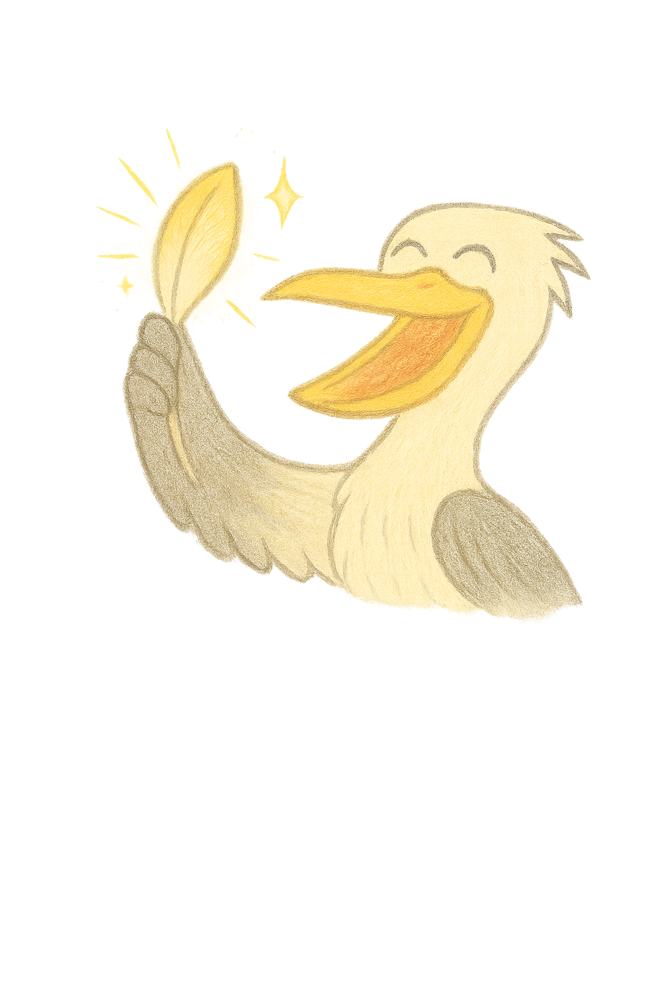

Accidentally Real
Novel • Kitty, Otter, and the sacred mending. (In progress)

A living gallery of projects blooming in Soft Time.

Novel • Kitty, Otter, and the sacred mending. (In progress)

Forward-memories journal — “Taste and see.”

A story about sideways thinking, soft friends, and words that are realer than real.